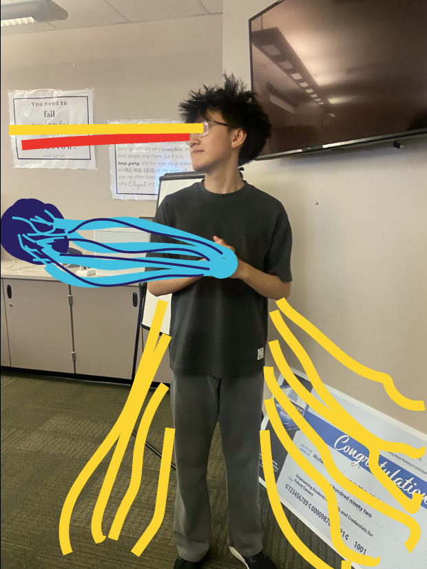
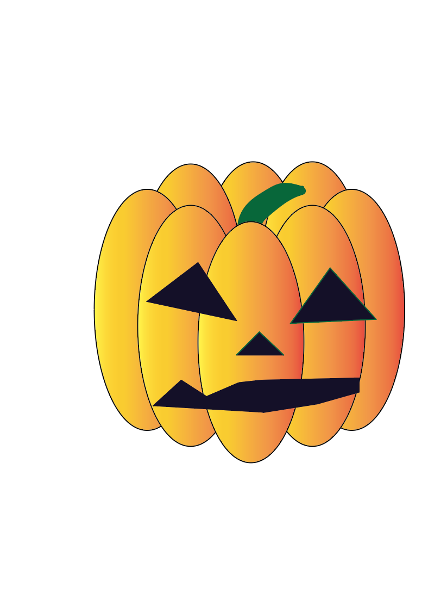

Photoshop Gallery
I learnt alot and had a good expierence in photoshop I learnt how to use multiple tools such as removing background cropping images color coding images to other images and text colors to match the colors of the image and also the curverture feature to curve the sentences and titles of an image and mascing images and makeing images poke out when masced

This was the recognizable creature project we had to do by using shapes to turn into a animal of our choosing I choose to do a hamster and i did this by using the circle square and curveture feature to make the ears and legs

This was the poster project where we had to get a movie or show character or remake the poster by using the pen and pencil tool which i did use in this and made shapes and i made bart simpson

This was the pen pencil project where we had to use both the pen and pencil to transform and add something to an image of our chooseing me and my friend andrew decided to do each other

This was the pumpkin project where we had to make a pumpkin with a face i used the oval feature to make the sides of the pumpkin the the pen and pencil tool to make the mouth eyes and nose and stem and colored it all in